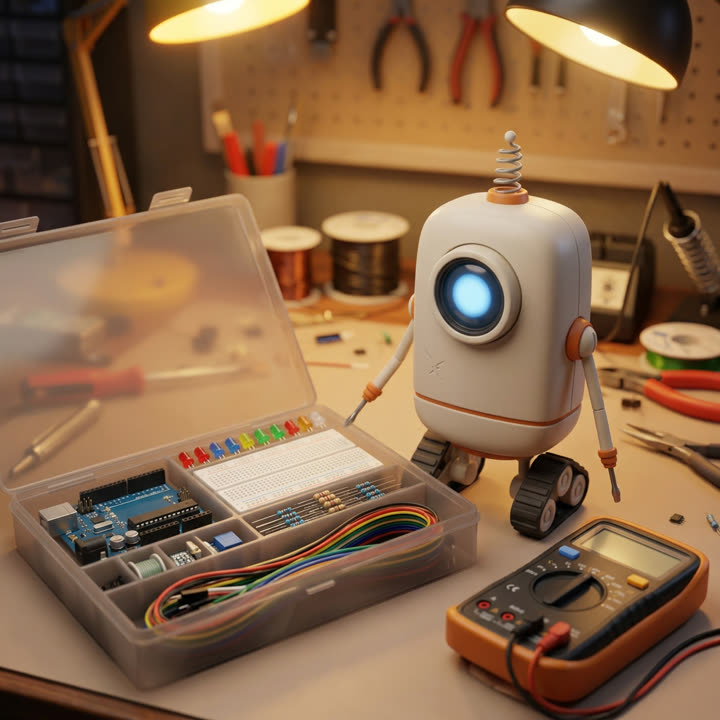
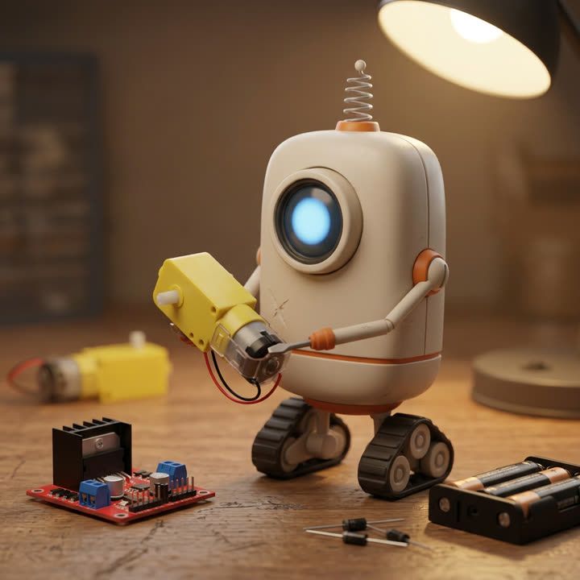
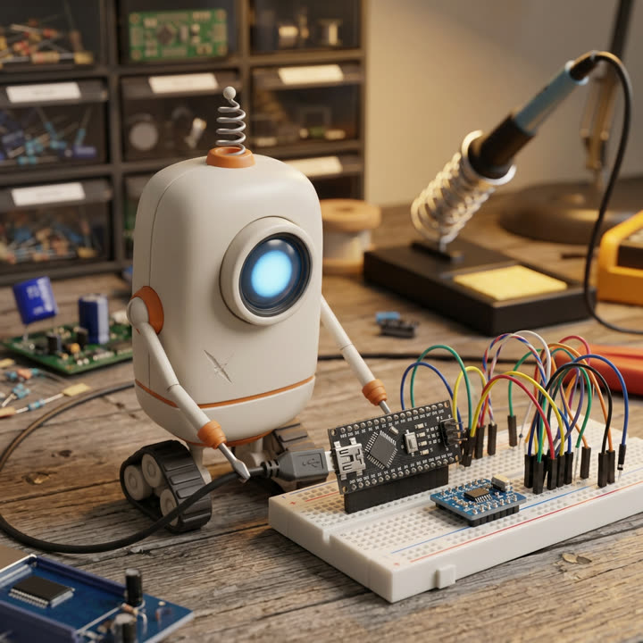

Sprocket's Parts Bin
The parts behind each 15-second tip 🤖🔧
As an Amazon Associate I earn from qualifying purchases. The links below are affiliate links — buying through them supports the channel at no extra cost to you. Sprocket is an AI character; these are the parts each tip is about, not personal reviews.
Start here

Everything you need for most of the tips in one box.
ELEGOO UNO R3 Super Starter KitBoard, breadboard, LEDs, resistors, buttons, motor and moreView → AstroAI Digital MultimeterCheck voltage, resistance, and continuity (beep mode)View → YIHUA 926 Soldering Station KitTemperature control for shiny, volcano-shaped jointsView →Motors & power

Never drive a motor straight from a pin, give it its own battery, and add a flyback diode.
L298N Motor Driver Modules (4 pcs)The pin sends the signal, the driver sends the powerView → TT Gear Motors, 1:48 (4 sets)Classic robot-car motors with built-in gearingView → 4×AA Battery Holders with Switch (2 pcs)A separate power supply for your motorsView → SG90 Micro Servos (10 pcs)Give them their own 5 V supply and share the groundView → Diode Assortment KitIncludes rectifier and Schottky diodes for flyback protectionView →Buttons & LEDs
Use INPUT_PULLUP for buttons, and never run an LED without a resistor.
Tactile Push Button Assortment6×6 mm buttons that fit a breadboardView → Resistor Kit, 25 valuesIncludes 220 Ω for standard LEDs on 5 VView → 5 mm LED AssortmentFive colors for status lights and testsView →Boards & wiring

ESP32 pins are 3.3 V, long breadboards may split their rails, and some USB cables are charge-only.
ELEGOO ESP32 Dev Boards, USB-C (3 pcs)Wi-Fi + Bluetooth microcontrollerView → Logic Level Converters, 3.3 V ↔ 5 VConnect 5 V sensors to ESP32 safelyView → Breadboards + Jumper Wires Kit830-point boards with jumper wiresView → USB-A to USB-C Data CableMade for data transfer, not just chargingView →